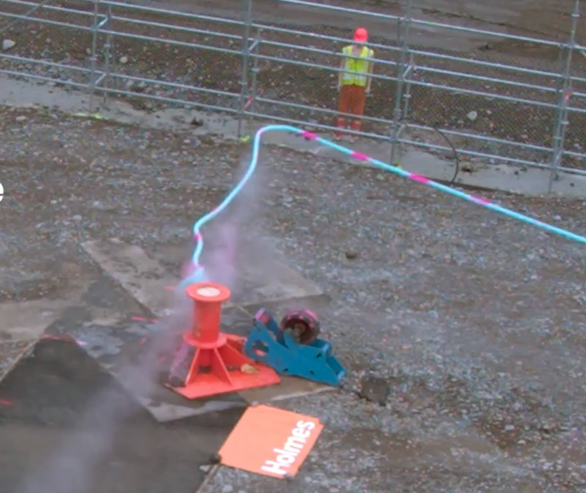
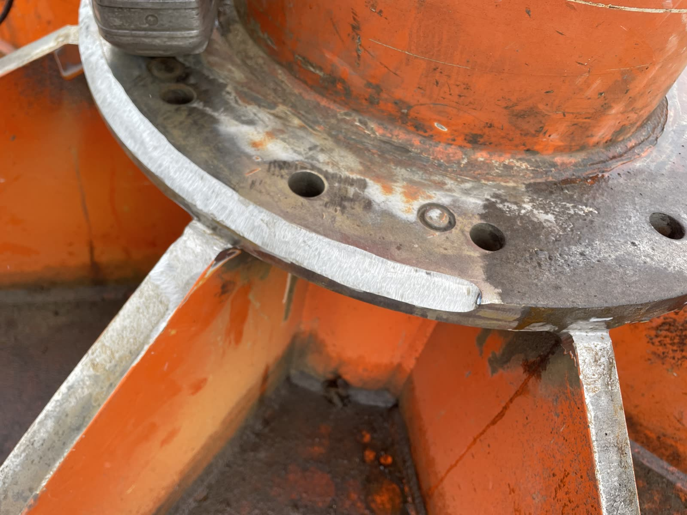
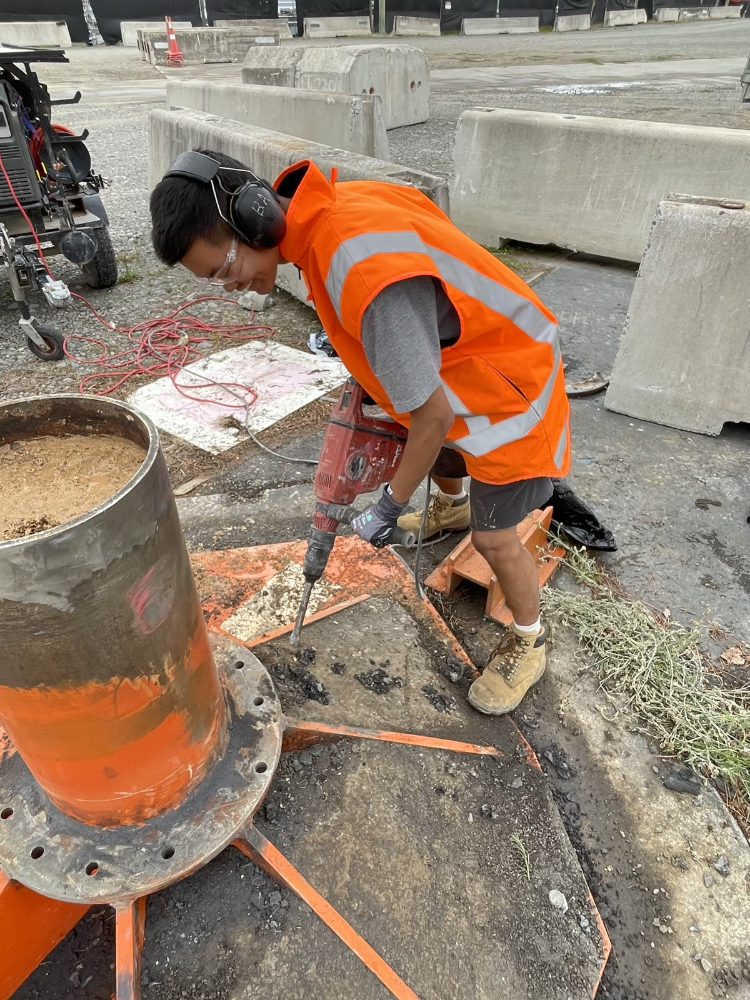

R&D / Test Engineering
Marine Snapback Research & Design
My main project during an R&D internship at Holmes Solutions. Mooring lines under tension can part and recoil violently, and how sharply a line bends over a fairlead or bollard, its D/d ratio, has a large effect on how much load it can really carry.
- Brief
- Upgrade the snapback test apparatus to test ropes at more realistic bend geometries
- Guidance
- Target geometry set in line with OCIMF MEG-4
- Status
- Designed, fabricated and installed; first round of full-scale testing run
- Output
- Co-author on the resulting technical paper, presented August 2026

01
Research
- Reviewed published research and industry guidance on how the D/d ratio affects mooring rope strength, efficiency and fatigue life, and how it ties into snapback risk.
- Analysed previous in-house test data and compared the measured rope behaviour against published bending-efficiency theory and the capstan friction relationship.
- Found that the bend geometries common in service can pull rope strength well below the idealised predictions, and identified friction across the bollard as a parameter that is not yet fully understood and worth investigating further.
- Set a target geometry in line with OCIMF MEG-4 guidance, and authored a research summary that defined the engineering problem, performance targets and constraints for the apparatus upgrade.
02
Design and verification
- Assessed the existing apparatus and defined its load constraints, then flagged a non-conservative capacity check on the revised load case with my own calculations and escalated it for structural review, rather than assuming the existing foundation would carry the new loads.
- Carried the capstan friction finding through into the design, using free-body analysis to account for the tension imbalance across the bollard rather than assuming the load was symmetric.
- Verified with hand calculations (bolt shear, bearing stress, preload loss, plate bending) to a comfortable margin, and used SolidWorks FEA to compare iterations and find stress concentrations. I picked up the FEA workflow on the job.
- Produced a staged construction and installation plan. All designs and calculations were reviewed and signed off by senior engineers.

03
Fabrication and install
- Supported fabrication of the sleeve and prepared the weld joint. The structural weld joining the sleeve to the bollard was completed by a certified welder.
- Broke out the tarmac around the base to clear the footprint for the install.
Took the upgrade from research and problem definition through concept, verification and drawings to fabrication and install. First round of full-scale testing has since been run.



Learned
- Structural verification in industry is about proving a comfortable safety margin on the upgrade, not chasing an exact number. On a ground-based rig you can buy that margin with steel, which does not transfer where mass or cost binds.
- I learned to lock in build decisions earlier. I spent too long refining the design and missed the build stage I wanted to oversee.